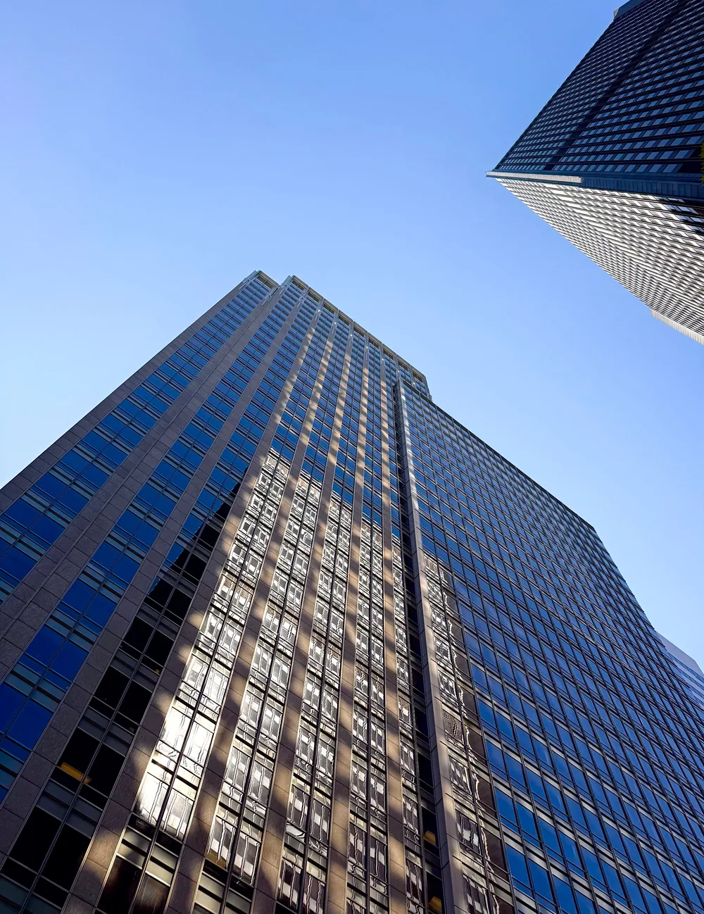

Talynd ontstond uit één frustratie.
Advies zonder een werkend resultaat.

We zagen vastgoedbedrijven verdrinken in handmatig werk, terwijl adviesbureaus rapporten leverden in plaats van werkende systemen.
Leads die bleven liggen, data verspreid over Excel en losse tools, en geen tijd om automatisering zelf op te zetten. Daarom bouwden we Talynd: geen adviesdeck, maar systemen die we opleveren, uitleggen en overdragen, zodat jij ze daarna zelf beheert.